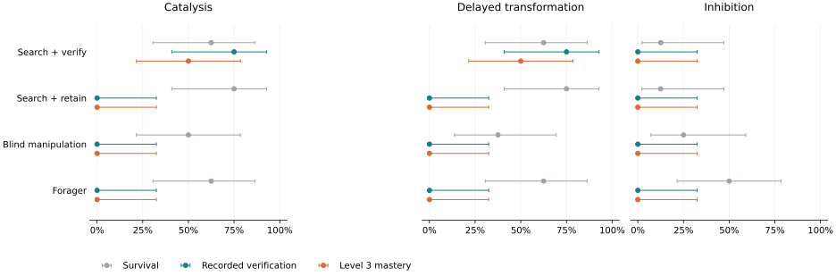

WORLDZERO / SCRIPTED CALIBRATION / 192 EPISODES
Finding an effect is not the same as checking it.
Four agents enter unfamiliar worlds. One forages. One moves objects blindly.
Two search for useful arrangements—but only one deliberately takes its discovery apart and rebuilds it.
+50.0 percentage points in recorded verification
Search + verify versus search + retain. Paired seed-cluster 95% bootstrap interval:
+25.0 to +66.7 points.
Hand-authored policies, public observations, matched active/null worlds.
This calibrates behavioral scoring; it is not a demonstration of LLM discovery.

All outcomes count
Verification counts the event-linked reconstruction witness even if the agent later dies.
Level 3 also requires survival, a supported finding, and the family's terminal retention flag. Zero null claims by an abstaining baseline
do not demonstrate that it can identify null worlds.
The boundary matters
These search policies look for a resource changing identity.
That strategy can detect transformation but does not identify inhibition, where a resource merely persists.
The study retains every family and seed, including that blind spot.
A verified mechanism can still lose its score
2 surviving verifier episodes had
reconstruction evidence and claimed support, but remained at Level 2 because the mechanism no longer worked
at the end. The report documents this terminal retention requirement without changing the scorer.
10 traces were replayed exactly: eight matched illustrations plus 2 scoring diagnostics. The full outcome table, source hashes,
methods, limitations, and reproduction commands are available below.